起点
我是陈志远 一名长期参与A股市场的独立交易者 2006年进入证券营业部工作 先从真实账户 持仓变化 散户行为与市场情绪中认识交易
我是陈志远
长期参与A股短线交易
持续跟踪情绪周期 题材强弱
龙头位置与资金承接
不预测所有行情
只在看得懂的结构里等待出手
我是陈志远 一名长期参与A股市场的独立交易者 2006年进入证券营业部工作 先从真实账户 持仓变化 散户行为与市场情绪中认识交易
后来转入全职短线交易 研究过打板 低吸 半路 回封 反包与龙头首分 也经历过追高 杂毛跟风 接力失效与情绪退潮
这些年交易范围越来越窄 现在主要观察市场情绪 主线题材 核心龙头与分歧承接 不追求抓住每一次上涨 只在自己能够识别的结构里等待机会
交易不是证明自己的判断正确
而是在判断失效时及时修正
追高 割肉 踏空 亏钱来回就这几下
追高吃面 缺乏盘前竞价的资金风向预测
踏空风向 无法在分歧拐点果断切入
割在黎明 错把主力强势洗盘当做退潮
盲信龙虎 沦为游资与量化席位的接盘侠
动作变形 情绪波动导致盘中知行不一
节奏踩错 一致高潮盲目去顶 分歧冰点恐慌割肉
资金分流 频繁交易跟风杂毛 损耗核心本金
先看涨停反馈 跌停数量 昨日强势股表现与整体亏钱效应 判断资金是在扩张 试错 分歧 还是退潮 情绪不支持时 再好的个股逻辑也容易失效
看强势方向能否持续回流 看板块内部有没有完整梯队 看核心上涨时 跟风是否真正得到资金响应 只有盘中脉冲 没有持续承接的方向不参与
核心不是涨得最多的股票 而是在板块分歧时仍有资金承接 在方向回流时最先得到确认 辨识度来自市场选择 不是来自主观想象
同一只股票处在不同位置 交易价值完全不同 重点观察启动 加速 首分 修复与退潮 位置不对 逻辑再好也可能变成接盘理由
收盘后提前写下强弱条件与应对方式 什么情况继续观察 什么情况可以出手 什么情况直接放弃 符合条件再行动 不让盘中波动替自己做决定
主线决定资金容量 核心决定市场辨识度 脱离主线的强势 大多难以形成持续反馈
情绪退潮时 强势股补跌 接力高度下降 亏钱效应扩散 减少出手 比寻找逆势机会更重要
高开不代表强 快速拉升也不代表强 真正的强势 要看分歧出现后有没有资金承接
一笔交易的结果 不能证明方法正确 也不能证明方法失效 真正需要观察的是 同一套标准能否长期重复执行
为什么关注 为什么出手 什么条件失效 结果与原判断有什么偏差 只有留下完整记录 经验才不会变成模糊印象
接触大量散户账户与交易行为 开始理解持仓变化 情绪波动与市场预期如何互相影响 这一阶段让我看到 多数亏损并不是因为没有机会 而是因为缺少稳定的判断标准
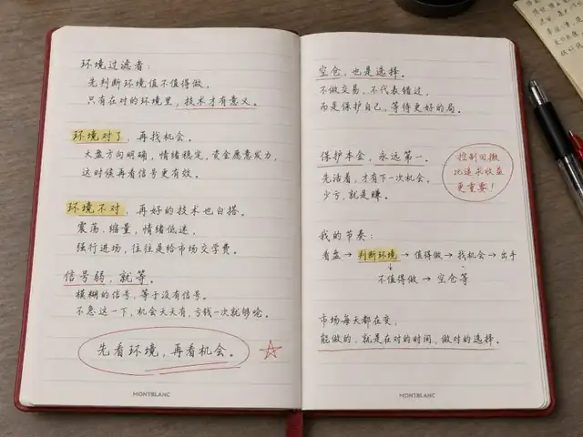
集中研究打板 低吸 半路 回封 反包与龙头首分 尝试过很多模式 也付出过很多没有必要的成本 真正重要的收获 不是又学会了一种交易方法 而是逐渐认识自己适合什么 不适合什么
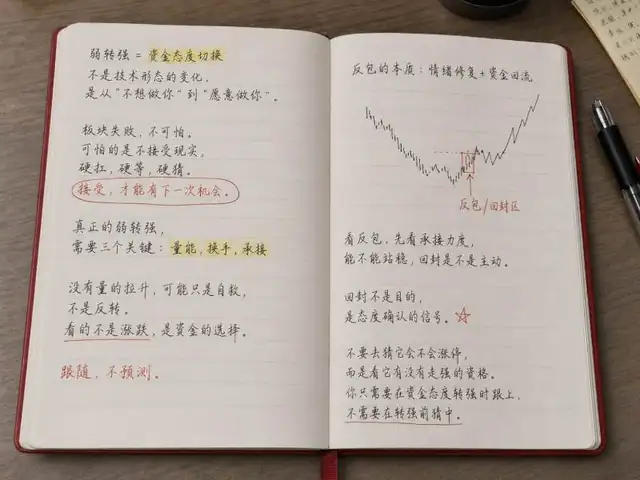
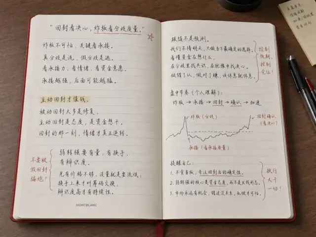
逐步放弃没有辨识度的机会 只跟踪主线题材 核心龙头 情绪拐点与分歧承接 交易开始从追逐机会 转向等待结构 从什么都想做 转向只做自己能够持续复盘的部分
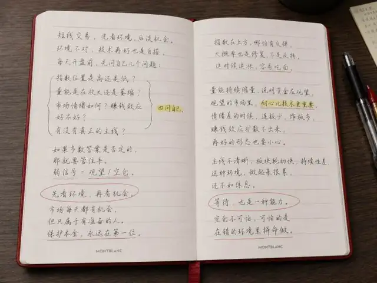
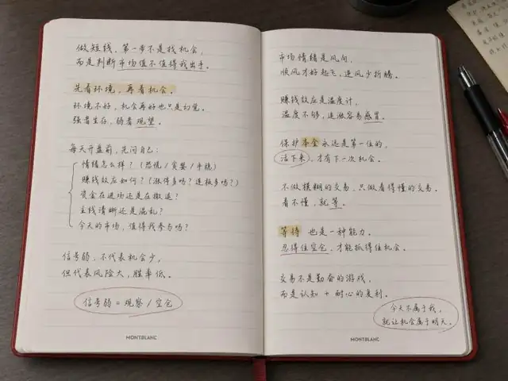
用手写笔记与每日简报记录盘面 保留当时的判断 出现的偏差 以及后续的修正 复盘不再只是解释当天发生了什么 而是为下一次出手留下依据
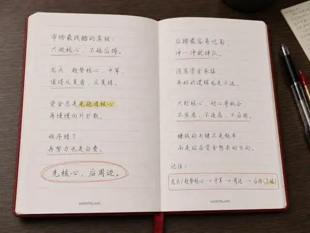
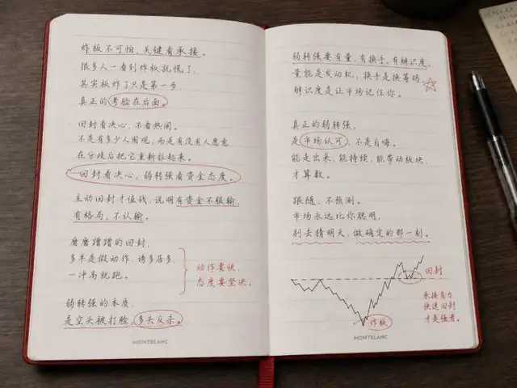
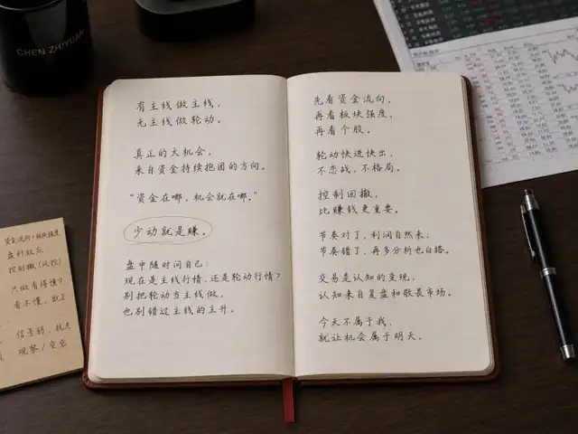
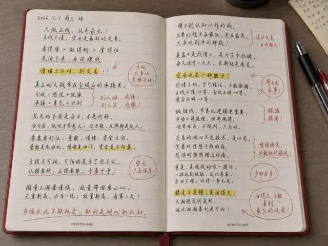
六笔真实交割单 每一笔都留下买卖点与当时的判断
● 买入 ● 卖出 为盘中真正下的决定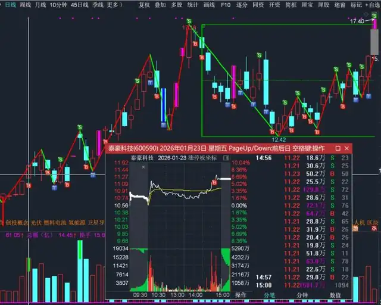
“龙头首阴不追 等回封”
买竞价低吸
卖主升高点
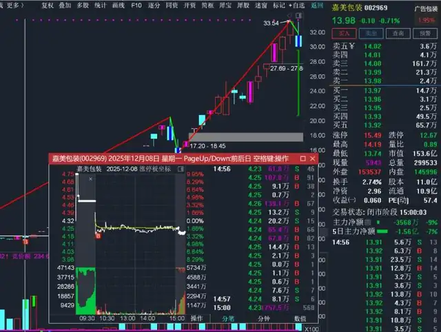
“弱转强 只做首次分歧”
买分歧回踩确认
卖一致加速离场
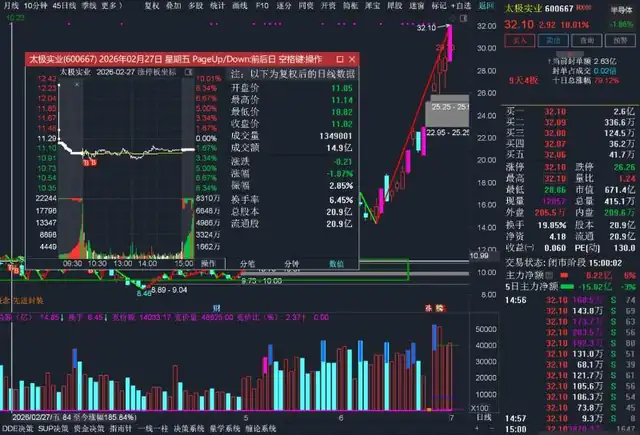
“缩量即减 不赌反包”
买龙头回封确认
卖高位缩量分歧
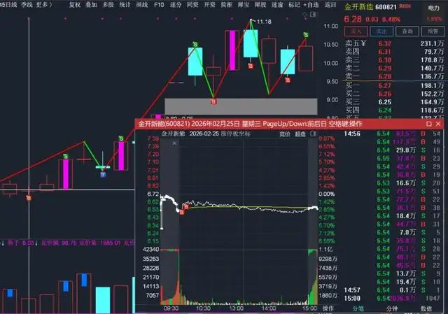
“冰点才敢下手”
买冰点低吸
卖修复反包兑现
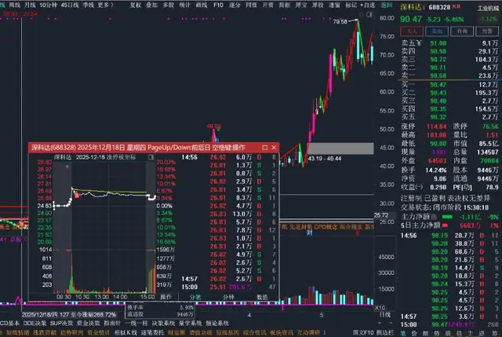
“量价背离就走”
买放量突破确认
卖缩量滞涨离场
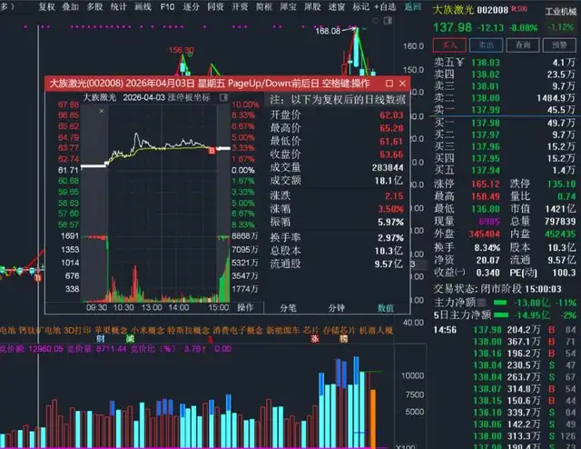
“共振才是真启动”
买资金共振切入
卖高位放量分歧
每天收盘后重新整理盘面 不罗列上涨板块 只回答五个问题
今天处在修复 加速 分歧 还是退潮 指数表现与短线情绪是否一致
资金主要在哪里赚钱 亏钱效应集中在哪些位置 昨日强势股是否继续给出正反馈
核心方向是否继续得到资金聚焦 板块内部是否形成梯队 回流是真正转强还是盘中短暂脉冲
次日开盘先看谁的竞价 谁的承接能够影响板块强弱 谁走弱之后会带来明显负反馈
什么信号出现才值得继续观察 什么信号出现可以考虑出手 什么信号出现必须主动放弃
盘后看清一段行情并不困难 真正困难的是 在行情仍然模糊时做出判断 在判断被证伪时及时修正 在机会不符合标准时保持等待 我记录市场 不是为了证明自己曾经看对 而是为了找到判断出现偏差的地方
看得准的多 拿得住的少
最低点靠猜 筹码出清靠等
计划是留给盘前的 冲动是留给盘中的
守住判断 是独立 有人帮你看清 是交流
所以别自己闷头扛 找个懂盘的人聊聊
期待与你交流 ✦
粉丝分享圈
企业微信